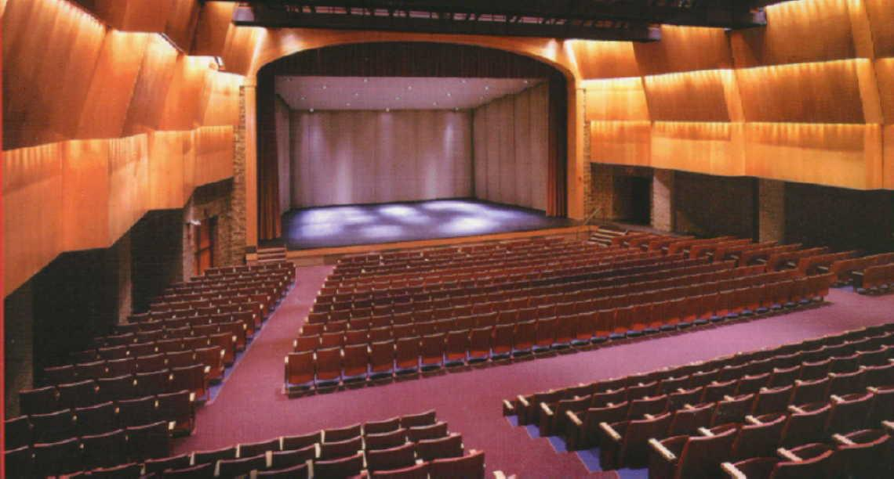
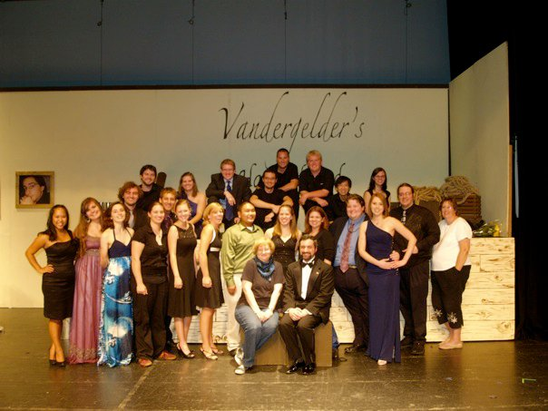

Education

- Alexandria, VA
- GPA = 4.069
Bishop Ireton High School '09

- Williamsburg, VA
- Computer Science, Philosophy
- Current GPA = 3.34
- Dean’s List – Fall 2011
College of William and Mary '13
Work Experience
Please note: most of these positions were internal to the organization. Thus, the visual mockups of designs or logos cannot be viewed publicly on the site. That being said, if you are interested, please let me know and I can provide some screenshots with all sensitive content removed.
Consultant (Booz Allen Hamilton, User Experience Team), June '13 - Present
Graphic/Web Designer
DONNA FMO-5: Audit Response and Evaluation, Apr '14 - June '14
- Worked on governmental seal (Adobe Illustrator)
- Constructed redesigns of the ARC Tool and its dashboard (Adobe Photoshop)

Web Developer/Designer (qfr.ideascale.com)
US Forest Service and Department of Interior, Mar '14
- Redesigned site (HTML, CSS, Javascript, JQuery) in IdeaScale framework

Web Developer/Designer (thegarage.bah.com)
Strategic Innovation Group, The Garage, Feb '14 - Mar '14
- Realized new site designs (HTML, CSS, Javascript, jQuery) in IdeaScale framework
Web Developer/Designer
Strategic Innovation Group, Solution Store, Feb '14
- Designed dashboard and modal windows (HTML, CSS, Javascript, JQuery, Bootstrap)
Web Developer/Designer
WHS Enterprise Management Strategic Communications, June '13 - Dec '13
- Applied daily change requests (HTML, Dreamweaver)
- Implemented new site designs (CSS, Drupal, Javascript, JQuery)
- Redesigned site layouts to improve navigation, organization, and usability
- Created visual mockups (Adobe Photoshop) for client communication

Webmaster (XI Middle School Model United Nations)
William and Mary International Relations Club, August '12 – May '13
- Updated content and overall appearance (HTML, PHP, CSS, mySQL)
- Improved site code comprehension and fixed bugs

Webmaster / Assistant Technical Director
St. Bernadette Summer Theatre Program, Summer '10 - Present
- Designed website for the theatre advertisement and information
- Created banner with Adobe Photoshop
Awards and Recognition
- Certificate for Academic Excellence in Honors Java Programming
- Certificate for Academic Excellence in Honors Geometry
- Marguerite Scafati Outstanding Academic Achievement Award 2006-2007
- 2007 Toshiba/National Science Exploravision Awards: Honorable Mention Winner – “iDesk”
- 99th percentile in the mathematics ACT score
- Marguerite Scafati Outstanding Service Award 2008-2009
- Secretary of BI Drama Club 2008-2009 - Created club email database
- Honor Bar and 4 Stars signifying 800 hours of work for the International Thespian Society
- Acting roles in 8 main stage Bishop Ireton plays (Lead actor - “Pajama Game”)
- Cappie Nomination for Best Ensemble in Zombie Prom